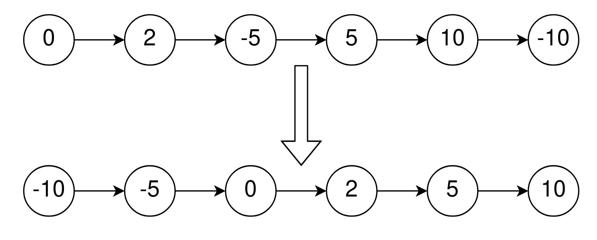
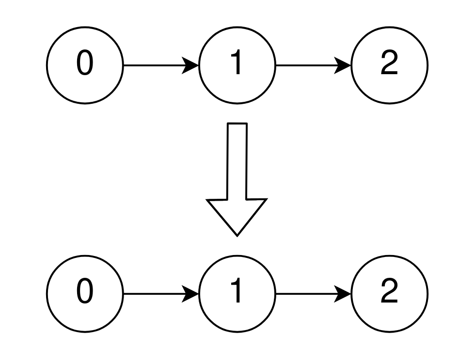

| Category | Difficulty | Likes | Dislikes |
|---|---|---|---|
| Algorithms | Medium | 173 | 3 |
head of a singly linked list that is sorted in non-decreasing order using the absolute values of its nodes, return the list sorted in non-decreasing order using the actual values of its nodes.
Example 1:

Input: head = [0,2,-5,5,10,-10]
Output: [-10,-5,0,2,5,10]
Explanation:
The list sorted in non-descending order using the absolute values of the nodes is [0,2,-5,5,10,-10].
The list sorted in non-descending order using the actual values is [-10,-5,0,2,5,10].Example 2:

Input: head = [0,1,2]
Output: [0,1,2]
Explanation:
The linked list is already sorted in non-decreasing order.Example 3:
Input: head = [1]
Output: [1]
Explanation:
The linked list is already sorted in non-decreasing order.
Constraints:
[1, 105].-5000 <= Node.val <= 5000head is sorted in non-decreasing order using the absolute value of its nodes.Follow up:
O(n) time complexity?